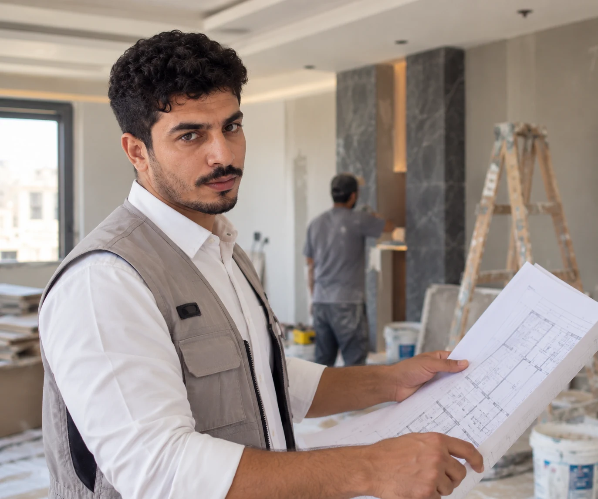

معلم دهانات وديكورات وترميم وتشطيبات في مكة وجدة
تبحث عن مقاول أو معلم بوية وديكورات شاطر ومضمون؟ نوفر لك تشطيباً هندسياً راقياً للشقق، الفلل، والمباني في مكة المكرمة وجدة. دهانات داخلية وخارجية (جوتن والجزيرة)، تركيب جبس بورد وأسقف معلقة، بديل الرخام والخشب، وأعمال ترميم وصيانة المباني القديمة على المفتاح مع معاينة مجانية وضمان كامل.
أرسل صور المكان أو المساحة المطلوبة ونعطيك تقييماً فورياً ومكتوباً.

خدمات الدهانات والديكورات والترميم والتشطيبات في مكة المكرمة
اختر الخدمة المتخصصة التي تناسب مشروعك واطلع على تفاصيل المواصفات والأسعار:
 الأكثر طلباً
الأكثر طلباً
الدهانات الداخلية وبوية الشقق
دهان الشقق، الفلل، غرف النوم والمجالس بأصباغ جوتن والجزيرة ربع لمعة ومطفي، مع علاج الرطوبة والتقشير.
معلم دهانات داخلية مكة ← مقاوم للشمس والأمطار
مقاوم للشمس والأمطار
الدهانات الخارجية والواجهات
تنفيذ بروفايل عسيب، جوتاشيلد جوتن، رشة أمريكية محببة، وتجديد واجهات المباني والفلل بأعلى درجات العزل.
دهانات واجهات وبروفايل مكة ← ألواح كناوف الأصلية
ألواح كناوف الأصلية
الجبس بورد والأسقف المعلقة
تركيب أسقف جبس بورد فلات، بيوت نور مخفية LED، مسارات ماجنتيك تراك لايت، وقواطع جدارية عازلة.
معلم جبس بورد مكة ← لمسات عصرية
لمسات عصرية
الديكورات وبديل الرخام والخشب
تركيب ألواح بديل الرخام، بديل الخشب WPC والشيبورد، بانوهات الفوم، شرائح الاستيل، وخلفيات الشاشات.
ديكورات وتشطيبات مكة ← تجديد شامل
تجديد شامل
ترميم وصيانة المنازل
تجديد وترميم المنازل والفلل القديمة، معالجة التشققات والشروخ، وتحديث السباكة والكهرباء والتشطيبات بالكامل.
مقاول ترميم مكة ← تسليم على المفتاح
تسليم على المفتاح
تشطيبات الشقق والفلل
استلام مشاريع التشطيب عظم وتسليمها على المفتاح، تنسيق متكامل بين اللياسة والجبس والدهانات والديكورات.
تشطيبات منازل مكة ←أحياء مكة المكرمة المشمولة بالمعاينة والتنفيذ السريع
نصلك في أسرع وقت داخل جميع أحياء ومخططات العاصمة المقدسة:
عندك مشروع دهانات أو ترميم في جدة؟
نقدم خدماتنا أيضاً في مدينة جدة لكافة أعمال الدهانات الداخلية والخارجية، تركيب الجبس بورد، بديل الرخام، وترميم وتشطيب الفلل والشقق.
أدلة قصيرة تساعدك على تحديد احتياج بيتك قبل البدء
تجهيز الجدران قبل الدهان
متى يحتاج الجدار معالجة وسيلر مائي قبل البوية لمنع التقشير؟
دليل اختيار الجبس بورد
كيف تختار أسقف الجبس وتؤسس مسارات الإنارة المخفية والماجنتيك تراك؟
تنسيق التشطيبات والديكور
ربط الدهان والجبس وبديل الرخام والخشب في مساحة واحدة متناسقة.
دليل ترميم المنازل
كيف تحدد أولويات تجديد الشقة أو الفيلا وتتفادى الأخطاء المكلفة؟
لماذا يعتمد علينا العملاء في مكة وجدة؟
تنفيذ مئات مشاريع الدهان والجبس والترميم في مختلف أحياء مكة وجدة.
توضيح ما يحتاجه المكان فعلياً بدون تكاليف إضافية أو بنود غير ضرورية.
صنفرة باللمبة واستلام بميزان الليزر لضمان جدران وأسقف خالية من العيوب.
تسليم الموقع في الموعد المحدد مع تنظيف وترتيب المكان بالكامل.
تتواصل مع المعلم صالح مباشرة دون وسطاء لمتابعة العمل خطوة بخطوة.
نلتزم بجودة المواد الأصلية ونقدم ضماناً مكتوباً على جودة التنفيذ.
4 خطوات بسيطة تبدأ من صورة على الواتساب
صوّر المكان
التقط صوراً عامة ومقربة للجدران أو الأسقف أو الواجهة.
أرسلها على واتساب
أرسل الصور مع اسم الحي والمساحة التقريبية لما تريد تغييره.
تقييم ومعاينة مجانية
نحدد نوع العمل وتكلفته المبدئية ونرتب موعد معاينة ميدانية مجانية.
الاتفاق والتنفيذ
نبدأ العمل بالمواد المتفق عليها ونسلمك المكان نظيفاً في الموعد المحدد.
كل ما تريد معرفته قبل بدء أعمال التشطيب والدهان
هل الاستشارة والمعاينة الميدانية مجانية؟
نعم، يمكنك إرسال صور المكان على واتساب للحصول على تقييم فوري مبدئي، كما نوفر معاينة ميدانية مجانية في كافة أحياء مكة المكرمة وجدة دون أي التزام.
هل يمكن تسعير العمل من الصور عبر واتساب؟
نعم، الصور ومقاطع الفيديو مع المقاسات التقريبية واسم الحي تعطينا فكرة دقيقة لتحديد نطاق السعر التقديري، وعند الاتفاق نقوم بالمعاينة لتثبيت العرض النهائي.
هل تنفذون أعمالاً بسيطة مثل دهان غرفة أو مجلس فقط؟
نعم، ننفذ تجديد بوية الغرف الفردية، دهان جدار ديكوري، تركيب فواصل وأسقف جبس، بالإضافة إلى مشاريع ترميم وتشطيب الشقق والفلل الكاملة.
ما هي الأحياء التي يغطيها معلم صالح في مكة وجدة؟
نغطي كافة أحياء مكة المكرمة (الشوقية، العوالي، بطحاء قريش، الشرائع، الزايدي، ولي العهد، الكعكية، النوارية...)، وأحياء جدة (أبحر الشمالية، الحمدانية، الصفا، المرجان، الروضة، السلامة، السامر...).
كم يستغرق دهان شقة كاملة؟
شقة 3 غرف وصالة تستغرق عادة من يومين إلى 3 أيام عمل تشمل الصنفرة، المعجون، والدهان النهائي مع حماية الأثاث والأرضيات بالكامل.
عندك شغل دهانات أو جبس أو ترميم في بيتك؟
لا تشيل هم؛ أرسل صور المكان لصالح على واتساب الآن واحصل على استشارة فنية ومعاينة مجانية وتسعير فوري دون أي التزام.